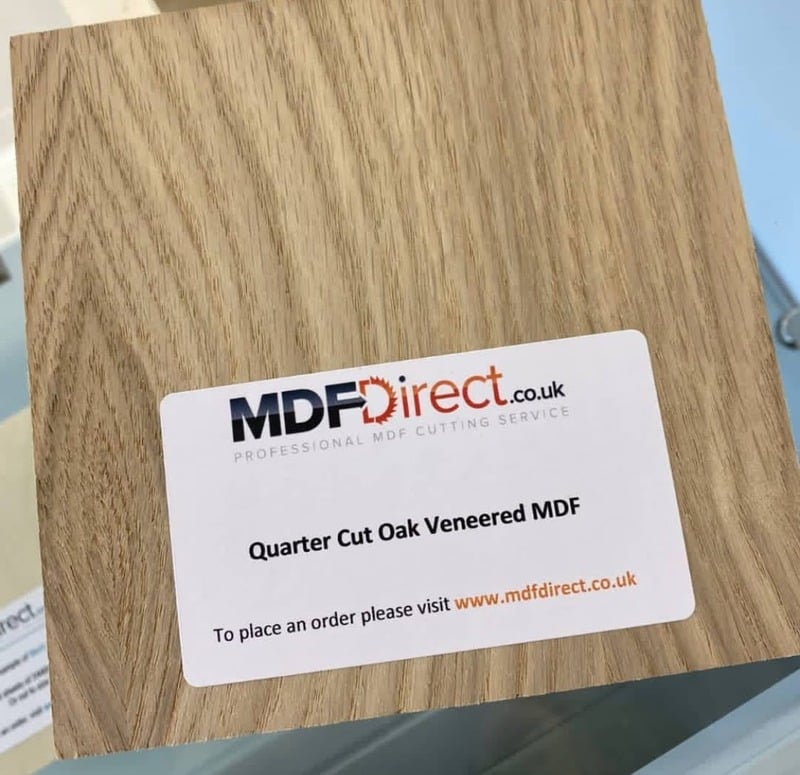
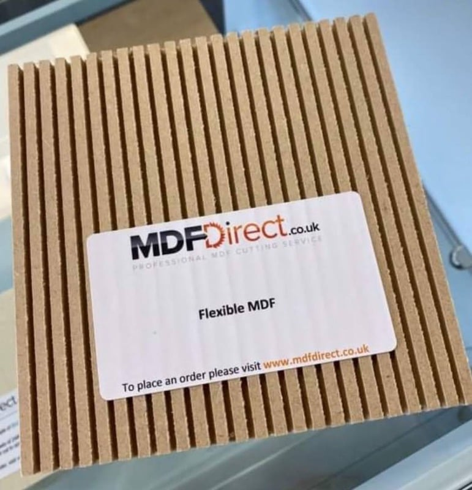
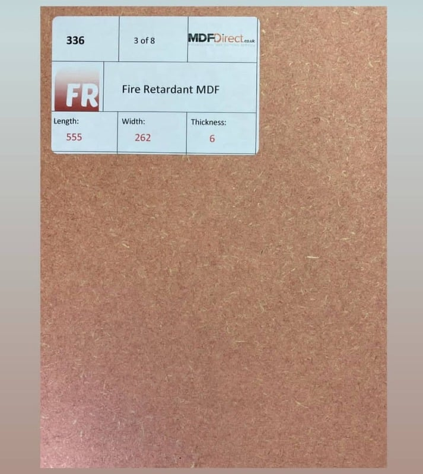
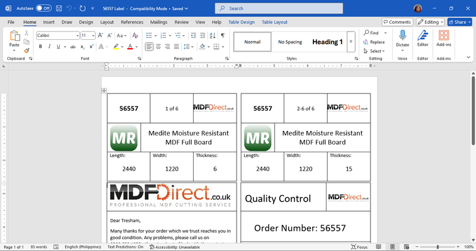
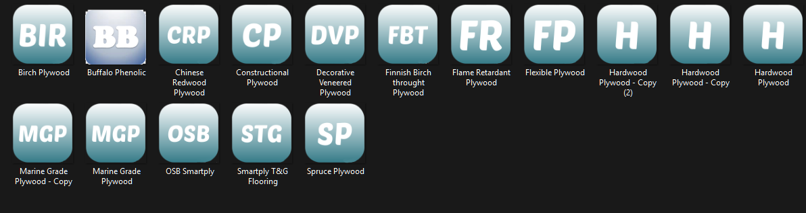
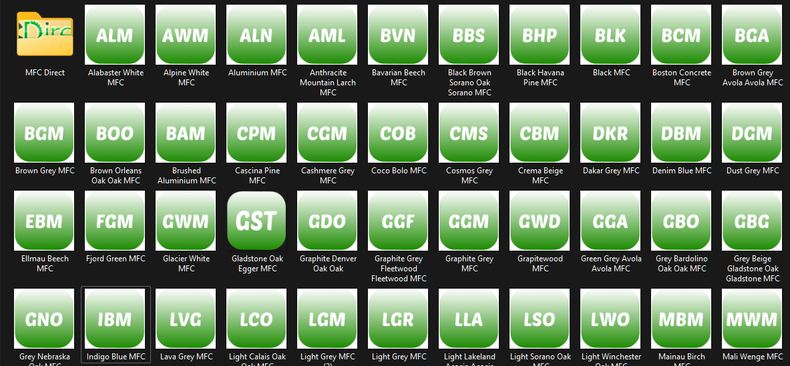
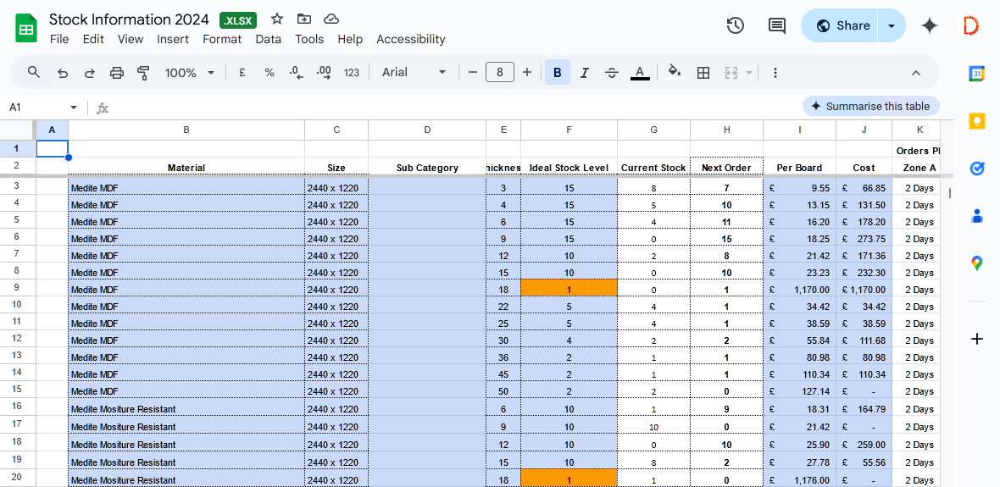
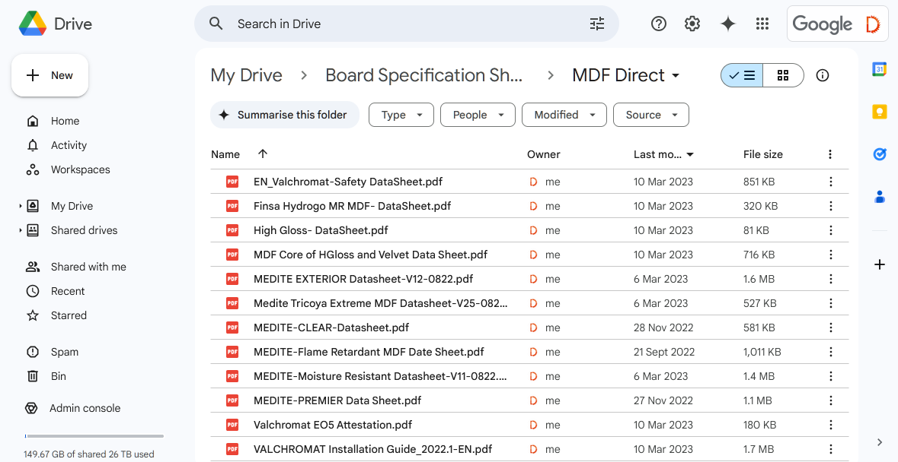
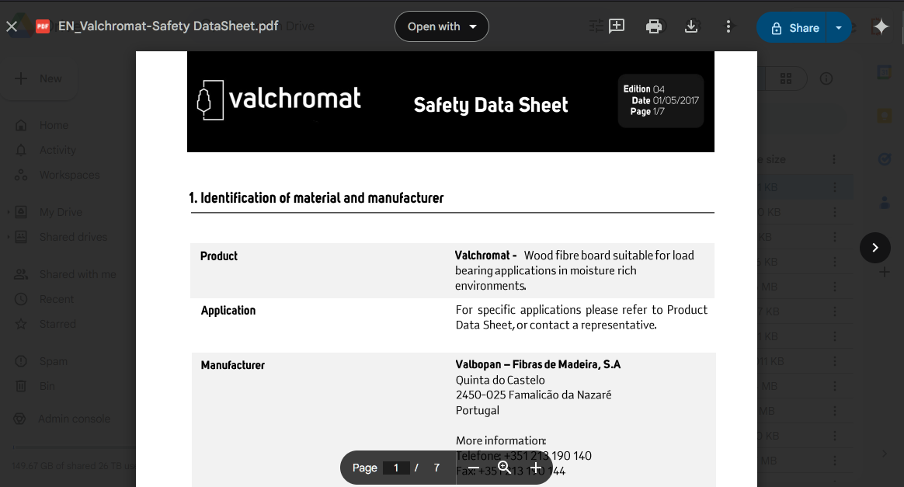

Key Projects & Work Samples
Real work, shown responsibly.
🔒 For data-privacy reasons I can't showcase most of my day-to-day output — live orders, client records, and support transcripts stay confidential. Below are samples that are safe to share and reflect the quality of my work.
From my day job — Online Retail Services Ltd
DesignProduction
Label & Sample Card Layouts
Designed the layouts for cut-to-size board labels and sample cards used in production — legibility-first design, including a set of simple instructional icons for the labels.






Data ManagementResearch
Product Research & Stock Database
Researched and organized the full board catalog: categories, supplier pricing, product photos, and technical specification sheets for customers with technical requirements.



Outreach
Client Research & Cold Outreach
Gathered potential clients within the niche — businesses, contact details, websites — and ran cold email outreach from the compiled lists.
Daily Operations
Behind the scenes (not shown, by design)
LiveChat, email, and SMS support · active-order record keeping · paperwork proofing · packing-slip generation and amendment. Confidential by nature — which is rather the point of hiring someone who takes data privacy seriously.
📌 Handled communications for non-business accounts
From university — Library & Information Science, UNC
Web
UNC Engineering & Architecture Library Google Site
Built a functioning library website in Google Sites, exploring how information services can be delivered in digital form. View the live site →
Web
UNC Library Filipiniana Section Website (HTML/CSS)
Hand-coded website for the Filipiniana section — clear navigation and user-centered information architecture.
Data Privacy
Thesis Data Management (RA 10173 Compliance)
Managed mixed-methods research data: Excel data cleaning, a data dictionary, consent forms, and breach-response protocols under the Philippine Data Privacy Act.
Performed as research lead for undergraduate thesis titled "Improving Library Facility Utilization Among SCIS Students at the University of Nueva Caceres"
Metadata
Metadata Schema for Faster Retrieval
Applied standardized metadata schemas to a collection, cutting search time and improving findability of resources.
Participated in database ledger project for St. Peter Life Plan
WritingLeadership
Published Writing & Org Communications
Feature articles for The DEMOCRAT, plus social media captions, project proposals, and certificate citations for Black Box Society and UNC Women's Club for previous years.
Currently serving as Secretary, School of Computer and Information Sciences Student Council · Secretary, BLIS Student Org · Deputy Secretary, UNC Protection of Animal Welfare — Students' Association (PAWSA) · Assistant Director, University Student Government English Immersive Environment.